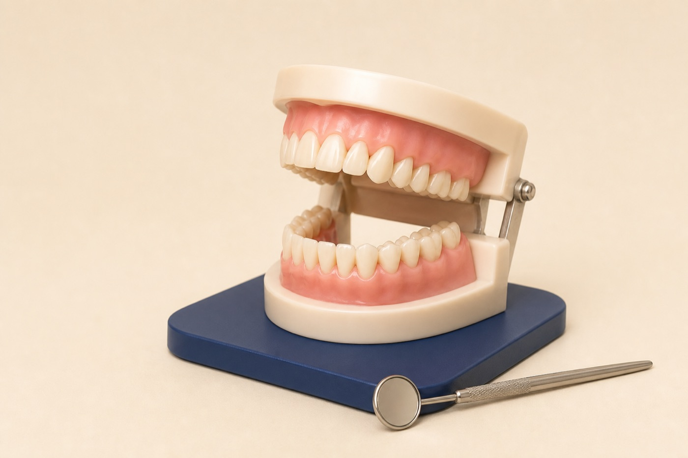

Update
Review health, medications, symptoms, and changes since the last visit.
Preventative dental care in Renton, WA
Preventative care combines regular exams, professional cleaning, appropriate imaging, and a home-care plan based on your cavity risk, gum health, and medical history.

Your visit
Preventative care should help you understand what is stable, what changed, and what deserves attention.
Review health, medications, symptoms, and changes since the last visit.
Examine teeth, gums, bite, soft tissues, and existing dental work.
Remove deposits and tailor hygiene guidance to problem areas.
Set a recall interval and next steps based on risk and findings.
Routine preventive visits do not replace evaluation of new pain, swelling, trauma, or rapidly changing symptoms.
Prevention is personal
Two people can brush equally well and still have different cavity, gum, dry-mouth, or wear risks. We use your history and current findings to set priorities.
Exams and appropriate imaging can find decay, cracks, infection, or gum changes before symptoms begin.
Professional cleaning removes plaque and hardened deposits that home care cannot fully remove.
Monitoring helps preserve fillings, crowns, implants, veneers, and other treatment.
What we monitor
Routine visits help us track the teeth, gums, bite, soft tissues, restorations, and changes related to health or medication.
Preventative care FAQ
The interval depends on cavity risk, gum health, medical history, home care, and prior findings. Some patients need more frequent maintenance than others.
X-rays can reveal decay, bone changes, infections, and other problems not visible during a clinical exam. They are recommended based on individual risk and history.
Visits may include health updates, exam, cleaning, gum measurements, appropriate imaging, oral cancer screening, and personalized home-care guidance.
No, but it can lower risk and help identify changes earlier, when treatment may be simpler and more conservative.
Schedule a preventative visit at SmileVibe Dentistry in Renton.